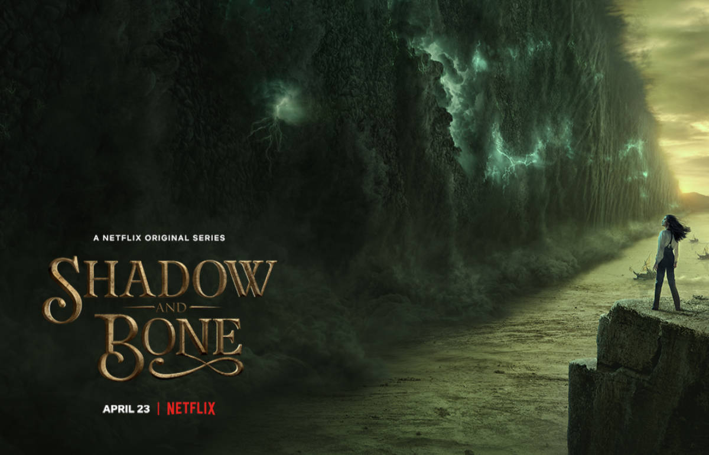

ЭКРАНИЗАЦИЯ СЕРИАЛА «ТЕНЬ И КОСТЬ» (2021)
«Тень и Кость» — сериал компании Netflix, основанный на романах американской фэнтези-писательницы Ли Бардуго «Тень и Кость» и «Шестерка Воронов». Съёмки начались в 2019 году в Будапеште, а завершились в феврале 2020 года. Премьера первого сезона состоялась 23 апреля 2021 года.
Из-за того, что по книгам временные рамки немного не совпадают (в «Шестерке» события происходят на два года позже), то сюжет выглядит немного иначе.
Сюжет: Могущественная страна Равка разделена на две части самой тьмой, где обитают опаснейшие монстры — волькры и обычный человек не проживет и минуты. Народ называет это место Тенистым Каньоном. Только гриши — маги, практикующие самое разное колдовство, могут противостоять существам оттуда.Военный картограф Алина, с отрядом солдат и гришей, была отправлена через Тенистый Каньон из одной части страны в другую. Когда ужасные монстры напали на солдат, а её лучшего друга Мала чуть не растерзали, внутри Алины пробудилась мощная магия, способная спасти страну Равку и её людей от тьмы.
Актёрский состав сериала сложился так:
- Бен Барнс в роли полководца армии гришей — Дарклинга;
- Джесси Мей Ли — Заклинательница Солнца Алина Старкова;
- Фредди Картер — в роли гениального вора Каза Бреккера;
- Арчи Рено — в роли Мала Оретцева: следопыта и лучшего друга Алины Старковой;
- Амита Суман — в роли Инеж Гафы, помощницы Каза Бреккера;
- Кит Янг — в роли Джеспера Фахи, хитрого и обаятельного стрелка;
- Суджая Дасгупта в роли Зои Назяленской;
- Даниэль Галлиган в роли сердцебитки Нины Зеник;
- Дейзи Хэд в роли Жени Сафиной.
Важные герои книг Николай Ланцов и Уайлен Ван-Экк не показаны в первом сезоне. Создатели сериала обсуждают возможность создания второго сезона, поэтому, скорее всего, они появтся там. Фотографии со съёмок вы можете увидеть
здесь.